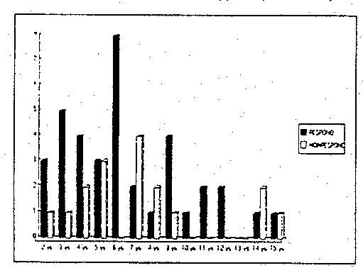

THE CIRCUMCISION REFERENCE LIBRARY
E. T. Jørgensen1 and Å Svensson2
1Department of Dermatology and Venereology, Central Hospital Kalmar and 2Central Hospital Kristianstad, Sweden
In an open trial, including 54 boys with phimosis, treatment with clobetasol propionate cream (Dermovate®, Glaxo, UK) was shown to be effective, without side effects. Surgery, the treatment of choice in many centres was avoided in 70% of the patients.
Acta Derm Venereol (Stockh) 1993; 73: 55-56
E. T. Jørgensen, Department of Dermatology, Länssjukhuset, S-391 85 Kalmar, Sweden.
The preputium is almost never retractable at birth, but this congenital normal phimosis generally disappears before 4 years of age1. However the incidence of phimosis is 8% in 6-7 year olds and falls to 1% in 16-17 year olds2.
In operated cases phimosis is caused by lichen sclerosis et atrophicus in a frequency up to 90%.3-11 To the best of our knowledge, no other histological proven skin disease causing phimosis in boys has been reported.
Lichen sclerosus et atrophicus on the penis was first described in 1908 by Delbanco as Kraurosis glandis et praeputii.12 The term balanitis was used by Stuhmer 1928 13, and some years later Layman & Freeman showed that balanitis xerotica obliterans was the same disease.14
Lichen sclerosus et atrophicus has been treated successfully with clobetosol propionate cream and other local steroids.15–18 The aim of this study was to investigate if clobetasol propionate cream could cure phimosis in boys.
MATERIAL AND METHODS
Between May 1985 and December 1990, 54 boys between 2 and 15 years (mean age 6,9 years) were included in this consecutive and prospective open study of patients referred for surgical treatment of phimosis.
Phimosis was defined an unretractable foreskin without adherences and/or a circular band of tight prepuce making complete retraction impossible.
At 4 years of age about 10% of boys have adherences of the foreskin to the glans penis1. Patients with this problem were not included in this study. This was the only exclusion criteria.
[CIRP note: The authors use the pathological term "adherences" to describe a normal developmental condition. The normal physiological bonds between the underlying glans penis and the inner mucosal layer of the foreskin persist in some boys to until much later. This is normal and does not require treatment.]
Treatment was given with clobetasol propionate 0,05% (Dermovate) cream. Parents were instructed to apply the cream in a thin layer on the outside of the prepuce from the distal margin to the corona glandis once daily. Attempts should be made to retract the foreskin and in such way dilate it as much as possible without pain.
The patient was seen after one month of treatment. If phimosis persisted, the treatment was continued and the patient was examined each month up to a maximum treatment of 3 months. Patients were regarded as cured if the prepuce was fully retractable.
Patients not cured after 3 months were referred to the surgical department.
In June 1991 a letter was sent to all parents of the boys whose phimosis had disappeared on treatment with the local steroid cream only. The parents were asked if the patients were still symptom-free or if an operation had been performed after the last visit. Two parents, who did not answer the letter were asked the same question on the telephone.
RESULTS
Local treatment with clobetasol propionate was successful in 38 of 54 boys. For these cured patients the mean follow-up time was 3.9 years. (range 0.8-5.6 years). The mean time of treatment was 49 days. Nobody showed skin atrophy or other side effects at the end of the treatment period.
In 4 patients the phimosis was caused by a highly sclerotic prepuce, regarded as typical of lichen sclerosis et atrophicus. Of these 4 patients 3 were cured with clobetasol propionate.
After three months of treatment with clobetasol propionate cream 16 boys showed persistent phimosis and were referred to the department of surgery. Of the excised prepuces 3 were histologically examined, all showing lichen sclerosis et atrophicus.
No significant difference in the age distribution was found between those who responded and those who did not respond to the steroid treatment.(Fig. 1)
DISCUSSION
This study has, to the best of our knowledge for the first time shown that local steroid application is an effective treatment of phimosis in boys. The main symptoms of the patients were the same as in others, i. e. recurrent infections, pain when urinating, difficulty in directing the stream of urine and foreskin blowing up like a balloon leaving urine in the trousers3. Congenital phimosis does disappear spontaneously in many cases even after 4 years of age 1,2. But this spontaneous resolution takes several years and is impossible to predict which phimosis will resolve and when. All of the patients had or had had symptoms and the parents claimed some form of treatment instead of an uncertain expectation. Since there is no tradition in Sweden for circumcision the parents were very pleased to try a local steroid application instead of surgery.

Fig. 1. Age distribution of the two groups of patients.
All patients were also instructed to retract the prepuce as much as possible without pain. Oster 2 has suggested that such a procedure could have caused phimosis to progress in 3 out of 1968 boys. In our comparatively small group nobody experienced such a deterioration. Further studies are needed to reveal the effect of this mechanical manipulation involved in the treatment procedure.
In our material only 4 patients showed lesions that by examination could be classified as lichen sclerosis et atrophicus. Since the study was designed to avoid surgery, no biopsies were taken for histologic examination. In a study by Chalmers et al.8 14 of 100 boys treated for phimosis had lichen sclerosis et atrophicus according to histologic examination. In another 10 patients the histologic examination showed a non-specific chronic inflammatory infiltrate. They stated the clinical symptoms were almost the same in all patients, although always more pronounced in the group with lichen sclerosus et atrophicus.
Clemmensen et al.19 made a histologic investigation of the prepuces of 78 patients operated upon because of phimosis. In 15 patients the histologic examination was compatible with lichen sclerosus et atrophicus, in 27 non-specific and in 36 normal. No correlation was found between the clinical and the histologic changes.
It is not known if lichen sclerosis et atrophicus can disappear spontaneously, like congenital phimosis. Lichen sclerosis et atrophicus lesions start with a slight redness20, and because the inside of the preputium is always red it is impossible to diagnose early lichen sclerosus et atrophicus without biopsy. The study has not revealed why some patients do not respond to the steroid treatment.
The treatment with clobetasol propionate is simple and showed no atrophy or other side effects in our material. Therefore it should be the first choice of treatment for boys with problems of phimosis.
REFERENCES:
(Accepted September 21, 1992)
http://www.cirp.org/library/treatment/phimosis/jorgensen/